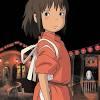
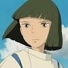
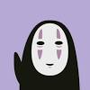
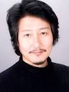
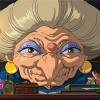
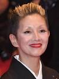

|  |
ChihiroRumi Hiiragi
According to Wikipedia, Hiiragi first appeared in numerous commercials. She voiced Chihiro in Hayao Miyazaki's award-winning anime film Spirited Away.
|
|  |
HakuMiyu Irino
According to Wikipedia, Miyu Irino is a Japanese voice actor and singer. He voiced Haku in Spirited Away.
|
|  |  |
KaonashiAkio Nakamura
According to IMDb, Akio Nakamura is known for Princess Mononoke (1997), Eureka Seven (2005) and Spirited Away (2001).
|
|  |  |
YubabaMari Natsuki
According to Wikipedia, Junko Nakajima, more commonly known by her stage name Mari Natsuki, is a Japanese singer, dancer and actress. Born in Tokyo, she started work as a singer from a young age.
|
 |
 |
KamajiBunta Sugawara
According to Wikipedia, Bunta Sugawara (August 16, 1933 – November 28, 2014) was a Japanese actor who appeared in almost 200 feature films. Dropping out of Waseda University, he worked as a model before entering the film industry in 1956.
|
| Click here to find out more about Spirited Away, or reach out to us by email at spiritedaway@uwo.ca. |